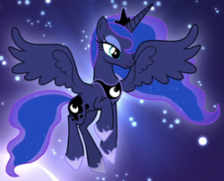

This is Princess Luna from My Little Pony! She's the co-leader of Equestria and her main job is to protect other ponies from nightmares, and lower and raise the moon.
Image file type: JPEG
I chose this image because it's my favorite shot from my favorite episode: Do Princesses Dream of Magic Sheep?